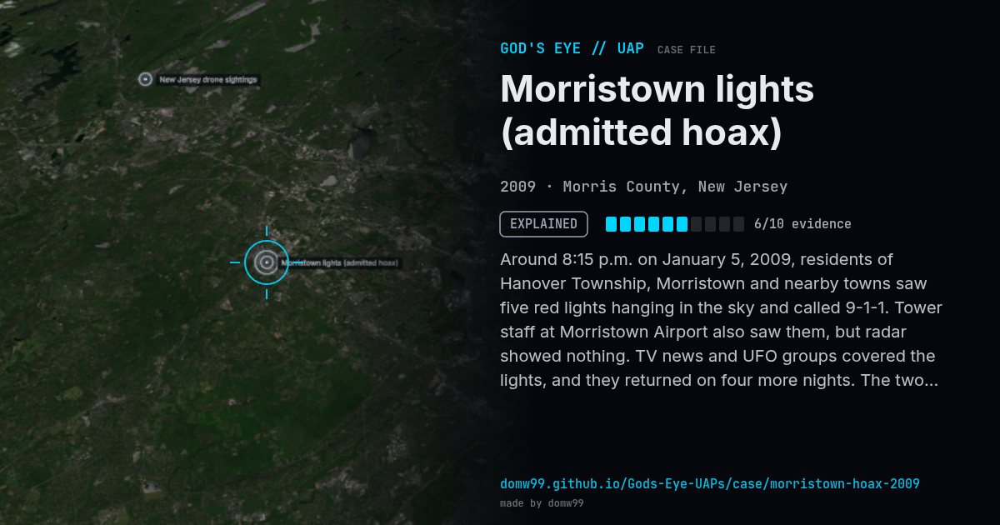

Morristown lights (admitted hoax)

Around 8:15 p.m. on January 5, 2009, residents of Hanover Township, Morristown and nearby towns saw five red lights hanging in the sky and called 9-1-1. Tower staff at Morristown Airport also saw them, but radar showed nothing. TV news and UFO groups covered the lights, and they returned on four more nights. The two men who launched the balloons had also given TV interviews posing as witnesses. They called it a social experiment to show how unreliable eyewitness claims can be.
Explanation
Hoax. Joe Rudy and Chris Russo tied road flares to helium balloons and released them on five nights, then revealed it on April 1, 2009 with video of the launches. They were fined for disorderly conduct.
What was seen
Shape: Five red lights in a line and arc
Witnesses: Dozens of residents, police, Morristown Airport tower staff
Duration: About 45 minutes, five nights